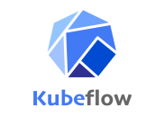
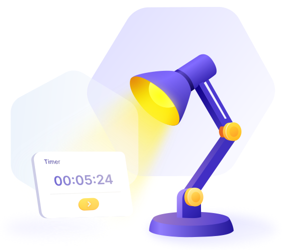

To make it work in production, you need strong infrastructure and a professional approach.
We bring our DevOps expertise into AI projects, building reliable ML infrastructure that scales and performs.
Since AI projects are highly innovative and evolve rapidly, our approach includes integrating a dedicated MLOps engineer into the core team and staying fully aligned with the project’s progress.
We help you define the right architecture, tools, and workflows to align your ML efforts with business goals — from prototype to production.
Stay in control of your models after deployment. We set up monitoring, alerting, and retraining pipelines to ensure performance stays consistent over time.
We automate your ML workflows — from data and model versioning to testing and deployment — enabling faster, safer, and repeatable releases.
We audit and tune your ML infrastructure for performance, scalability, and cost-efficiency — cloud, hybrid, or on-prem.

Right decisions from day one

Actions are defined and executed in the correct order, creating a foundation that scales and adapts to change.
We clearly define and control each MLOps stage, enabling fast and predictable execution.
Efficient, scalable solutions apply ML and AI in a production-ready way to strengthen your product, boost efficiency, and keep costs predictable.
We believe the right support starts with understanding your project. To bring the most value, we tailor our services to fit your specific needs — not just offer a standard package. Answer 4 quick questions to help us recommend the solution that suits you best.